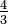
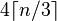

Base64
| This article's lead section may not adequately summarize key points of its contents. (February 2013) |
| This article may have too many section headers dividing up its content. (February 2013) |
Base64 is a group of similar binary-to-text encoding schemes that represent binary data in an ASCII string format by translating it into a radix-64 representation. The term Base64 originates from a specific MIME content transfer encoding.
Base64 encoding schemes are commonly used when there is a need to encode binary data that needs to be stored and transferred over media that are designed to deal with textual data. This is to ensure that the data remains intact without modification during transport. Base64 is commonly used in a number of applications including email via MIME, and storing complex data in XML.
Design[edit]
The particular choice of character set selected for the 64 characters required for the base varies between implementations. The general rule is to choose a set of 64 characters that is both part of a subset common to most encodings, and also printable. This combination leaves the data unlikely to be modified in transit through information systems, such as email, that were traditionally not 8-bit clean.[1] For example, MIME's Base64 implementation uses A–Z, a–z, and 0–9 for the first 62 values. Other variations, usually derived from Base64, share this property but differ in the symbols chosen for the last two values; an example is UTF-7.
The earliest instances of this type of encoding were created for dialup communication between systems running the same OS — e.g. uuencode for UNIX, BinHex for the TRS-80 (later adapted for the Macintosh) — and could therefore make more assumptions about what characters were safe to use. For instance, uuencode uses uppercase letters, digits, and many punctuation characters, but no lowercase.[2][3][4][1]
Examples[edit]
A quote from Thomas Hobbes' Leviathan:
Man is distinguished, not only by his reason, but by this singular passion fromother animals, which is a lust of the mind, that by a perseverance of delightin the continued and indefatigable generation of knowledge, exceeds the shortvehemence of any carnal pleasure.
is represented as a byte sequence of 8-bit-padded ASCII characters encoded in MIME's Base64 scheme as follows:
TWFuIGlzIGRpc3Rpbmd1aXNoZWQsIG5vdCBvbmx5IGJ5IGhpcyByZWFzb24sIGJ1dCBieSB0aGlzIHNpbmd1bGFyIHBhc3Npb24gZnJvbSBvdGhlciBhbmltYWxzLCB3aGljaCBpcyBhIGx1c3Qgb2YgdGhlIG1pbmQsIHRoYXQgYnkgYSBwZXJzZXZlcmFuY2Ugb2YgZGVsaWdodCBpbiB0aGUgY29udGludWVkIGFuZCBpbmRlZmF0aWdhYmxlIGdlbmVyYXRpb24gb2Yga25vd2xlZGdlLCBleGNlZWRzIHRoZSBzaG9ydCB2ZWhlbWVuY2Ugb2YgYW55IGNhcm5hbCBwbGVhc3VyZS4=
In the above quote, the encoded value of Man is TWFu. Encoded in ASCII, the characters M, a, and n are stored as the bytes 77, 97, and 110, which are the 8-bit binary values 01001101, 01100001, and 01101110. These three values are joined together into a 24-bit string, producing 010011010110000101101110. Groups of 6 bits (6 bits have a maximum of 26 = 64 different binary values) are converted into individual numbers from left to right (in this case, there are four numbers in a 24-bit string), which are then converted into their corresponding Base64 character values.
| Text content | M | a | n | |||||||||||||||||||||
|---|---|---|---|---|---|---|---|---|---|---|---|---|---|---|---|---|---|---|---|---|---|---|---|---|
| ASCII | 77 (0x4d) | 97 (0x61) | 110 (0x6e) | |||||||||||||||||||||
| Bit pattern | 0 | 1 | 0 | 0 | 1 | 1 | 0 | 1 | 0 | 1 | 1 | 0 | 0 | 0 | 0 | 1 | 0 | 1 | 1 | 0 | 1 | 1 | 1 | 0 |
| Index | 19 | 22 | 5 | 46 | ||||||||||||||||||||
| Base64-encoded | T | W | F | u | ||||||||||||||||||||
As this example illustrates, Base64 encoding converts three octets into four encoded characters.
The Base64 index table:
| Value | Char | Value | Char | Value | Char | Value | Char | |||
|---|---|---|---|---|---|---|---|---|---|---|
| 0 | A |
16 | Q |
32 | g |
48 | w |
|||
| 1 | B |
17 | R |
33 | h |
49 | x |
|||
| 2 | C |
18 | S |
34 | i |
50 | y |
|||
| 3 | D |
19 | T |
35 | j |
51 | z |
|||
| 4 | E |
20 | U |
36 | k |
52 | 0 |
|||
| 5 | F |
21 | V |
37 | l |
53 | 1 |
|||
| 6 | G |
22 | W |
38 | m |
54 | 2 |
|||
| 7 | H |
23 | X |
39 | n |
55 | 3 |
|||
| 8 | I |
24 | Y |
40 | o |
56 | 4 |
|||
| 9 | J |
25 | Z |
41 | p |
57 | 5 |
|||
| 10 | K |
26 | a |
42 | q |
58 | 6 |
|||
| 11 | L |
27 | b |
43 | r |
59 | 7 |
|||
| 12 | M |
28 | c |
44 | s |
60 | 8 |
|||
| 13 | N |
29 | d |
45 | t |
61 | 9 |
|||
| 14 | O |
30 | e |
46 | u |
62 | + |
|||
| 15 | P |
31 | f |
47 | v |
63 | / |
When the number of bytes to encode is not divisible by three (that is, if there are only one or two bytes of input for the last 24-bit block), then the following action is performed: Add extra bytes with value zero so there are three bytes, and perform the conversion to base64. If there was only one significant input byte, only the first two base64 digits are picked (12 bits), and if there were two significant input bytes, the first three base64 digits are picked (18 bits). '=' characters might be added to make the last block contain four base64 characters.
As a result: When the last group contains one octet, the four least significant bits of the final 6-bit block are set to zero; and when the last group contains two octets, the two least significant bits of the final 6-bit block are set to zero.
Padding[edit]
The '==' sequence indicates that the last group contained only one byte, and '=' indicates that it contained two bytes. The example below illustrates how truncating the input of the whole of the above quote changes the output padding:
Input ends with: any carnal pleasure. Output ends with: YW55IGNhcm5hbCBwbGVhc3VyZS4= Input has 20 bytes, output has 28 bytes (1 padding). Input ends with: any carnal pleasure Output ends with: YW55IGNhcm5hbCBwbGVhc3VyZQ== Input has 19 bytes, output has 28 bytes (2 padding). Input ends with: any carnal pleasur Output ends with: YW55IGNhcm5hbCBwbGVhc3Vy Input has 18 bytes, output has 24 bytes (no padding). Input ends with: any carnal pleasu Output ends with: YW55IGNhcm5hbCBwbGVhc3U= Input has 17 bytes, output has 24 bytes (1 padding). Input ends with: any carnal pleas Output ends with: YW55IGNhcm5hbCBwbGVhcw== Input has 16 bytes, output has 24 bytes (2 padding).
The same characters will be encoded differently depending on their position within the three-octet group which is encoded to produce the four characters. For example:
The input: pleasure. Encodes to: cGxlYXN1cmUu The input: leasure. Encodes to: bGVhc3VyZS4= The input: easure. Encodes to: ZWFzdXJlLg== The input: asure. Encodes to: YXN1cmUu The input: sure. Encodes to: c3VyZS4=
The number of output bytes per input byte is  (33% overhead), up to rounding. Specifically, given an input of n bytes, the output will be  bytes long, including padding characters.
In theory, the padding character is not needed for decoding, since the number of missing bytes can be calculated from the number of Base64 digits. In some implementations, the padding character is mandatory, while for others it is not used. One case in which padding characters are required is concatenating multiple Base64 encoded files.
Decoding Base64 with padding[edit]
When decoding Base64 text, four characters are typically converted back to three bytes. The only exceptions are when padding characters exist. A single '=' indicates that the four characters will decode to only two bytes, while '==' indicates that the four characters will decode to only a single byte. For example:
Encoded text ends with: YW55IGNhcm5hbCBwbGVhcw== Block with two '='s decodes to one byte: any carnal pleas Encoded text ends with: YW55IGNhcm5hbCBwbGVhc3U= Block with one '=' decodes to two bytes: any carnal pleasu Encoded text ends with: YW55IGNhcm5hbCBwbGVhc3Vy Block with no '='s decodes to three bytes: any carnal pleasur
Decoding Base64 without padding[edit]
Without padding, after normal decoding of four characters to three bytes over and over again, less than four encoded characters may remain. In this situation only two or three characters shall remain. A single remaining encoded character is not possible. For example:
Encoded text ends with: YW55IGNhcm5hbCBwbGVhcw Block with two base64-characters decodes to one byte: any carnal pleas Encoded text ends with: YW55IGNhcm5hbCBwbGVhc3U Block with three base64-characters decodes to two bytes: any carnal pleasu Encoded text ends with: YW55IGNhcm5hbCBwbGVhc3Vy Block with four base64-characters decodes to three bytes as usual, after that nothing remains: any carnal pleasur
Implementations and history[edit]
Variants summary table[edit]
Implementations may have some constraints on the alphabet used for representing some bit patterns. This notably concerns the last two characters used in the index table for index 62 and 63, and the character used for padding (which may be mandatory in some protocols, or removed in others). The table below summarizes these known variants, and link to the subsections below.
| Variant | Char for index 62 | Char for index 63 | pad char | Fixed encoded line-length | Maximum encoded line length | Line separators | Characters outside alphabet | Line checksum |
|---|---|---|---|---|---|---|---|---|
| Original Base64 for Privacy-Enhanced Mail (PEM) (RFC 1421, deprecated) | + |
/ |
= (mandatory) |
Yes (except last line) | 64 | CR+LF | Forbidden | (none) |
| Base64 transfer encoding for MIME (RFC 2045) | + |
/ |
= (mandatory) |
No (variable) | 76 | CR+LF | Accepted (discarded) | (none) |
| Standard 'base64' encoding for RFC 3548 or RFC 4648 | + |
/ |
= (optional) |
Yes (except last line) | 64 or 76 (only if line separators are specified and needed) | CR+LF (only if specified and needed) | Forbidden | (none) |
| 'Radix-64' encoding for OpenPGP (RFC 4880) | + |
/ |
= (mandatory) |
No (variable) | 76 | CR+LF | Forbidden | 24-bit CRC (Radix-64-encoded, including one pad character) |
| Modified Base64 encoding for UTF-7 (RFC 1642, obsoleted) | + |
/ |
(none) | No (variable) | (none) | (none) | Forbidden | (none) |
| Standard 'base64url' with URL and Filename Safe Alphabet (RFC 4648 §4 'Table 2: The "URL and Filename safe" Base 64 Alphabet') | - |
_ |
= (optional, not recommended) |
No (variable) | (application-dependent) | (none) | Forbidden | (none) |
| Non-standard URL-safe Modification of Base64 used in YUI Library (Y64)[5] | . |
_ |
- |
No (variable) | (application-dependent) | (none) | Forbidden | (none) |
| Modified Base64 for XML name tokens (Nmtoken) | . |
- |
(none) | No (variable) | (XML parser-dependent) | (none) | Forbidden | (none) |
| Modified Base64 for XML identifiers (Name) | _ |
: |
(none) | No (variable) | (XML parser-dependent) | (none) | Forbidden | (none) |
| Modified Base64 for Program identifiers (variant 1, non standard) | _ |
- |
(none) | No (variable) | (language/system-dependent) | (none) | Forbidden | (none) |
| Modified Base64 for Program identifiers (variant 2, non standard) | . |
_ |
(none) | No (variable) | (language/system-dependent) | (none) | Forbidden | (none) |
| Modified Base64 for Regular expressions (non standard) | ! |
- |
(none) | No (variable) | (application-dependent) | (none) | Forbidden | (none) |
Privacy-enhanced mail[edit]
The first known standardized use of the encoding now called MIME Base64 was in the Privacy-enhanced Electronic Mail (PEM) protocol, proposed by RFC 989 in 1987. PEM defines a "printable encoding" scheme that uses Base64 encoding to transform an arbitrary sequence of octets to a format that can be expressed in short lines of 6-bit characters, as required by transfer protocols such as SMTP.[6]
The current version of PEM (specified in RFC 1421) uses a 64-character alphabet consisting of upper- and lower-case Roman letters (A–Z, a–z), the numerals (0–9), and the "+" and "/" symbols. The "=" symbol is also used as a special suffix code.[2] The original specification, RFC 989, additionally used the "*" symbol to delimit encoded but unencrypted data within the output stream.
To convert data to PEM printable encoding, the first byte is placed in the most significant eight bits of a 24-bit buffer, the next in the middle eight, and the third in the least significant eight bits. If there are fewer than three bytes left to encode (or in total), the remaining buffer bits will be zero. The buffer is then used, six bits at a time, most significant first, as indices into the string: "ABCDEFGHIJKLMNOPQRSTUVWXYZabcdefghijklmnopqrstuvwxyz0123456789+/", and the indicated character is output.
The process is repeated on the remaining data until fewer than four octets remain. If three octets remain, they are processed normally. If fewer than three octets (24 bits) are remaining to encode, the input data is right-padded with zero bits to form an integral multiple of six bits.
After encoding the non-padded data, if two octets of the 24-bit buffer are padded-zeros, two "=" characters are appended to the output; if one octet of the 24-bit buffer is filled with padded-zeros, one "=" character is appended. This signals the decoder that the zero bits added due to padding should be excluded from the reconstructed data. This also guarantees that the encoded output length is a multiple of 4 bytes.
PEM requires that all encoded lines consist of exactly 64 printable characters, with the exception of the last line, which may contain fewer printable characters. Lines are delimited by whitespace characters according to local (platform-specific) conventions.
MIME[edit]
The MIME (Multipurpose Internet Mail Extensions) specification lists Base64 as one of two binary-to-text encoding schemes (the other being quoted-printable).[3] MIME's Base64 encoding is based on that of the RFC 1421 version of PEM: it uses the same 64-character alphabet and encoding mechanism as PEM, and uses the "=" symbol for output padding in the same way, as described at RFC 1521.
MIME does not specify a fixed length for Base64-encoded lines, but it does specify a maximum line length of 76 characters. Additionally it specifies that any extra-alphabetic characters must be ignored by a compliant decoder, although most implementations use a CR/LF newline pair to delimit encoded lines.
Thus, the actual length of MIME-compliant Base64-encoded binary data is usually about 137% of the original data length, though for very short messages the overhead can be much higher due to the overhead of the headers. Very roughly, the final size of Base64-encoded binary data is equal to 1.37 times the original data size + 814 bytes (for headers). The size of the decoded data can be approximated with this formula:
bytes = (string_length(encoded_string) - 814) / 1.37
UTF-7[edit]
UTF-7, described first in RFC 1642, which was later superseded by RFC 2152, introduced a system called modified Base64. This data encoding scheme is used to encode UTF-16 as ASCII characters for use in 7-bit transports such as SMTP. It is a variant of the Base64 encoding used in MIME.[7][8]
The "Modified Base64" alphabet consists of the MIME Base64 alphabet, but does not use the "=" padding character. UTF-7 is intended for use in mail headers (defined in RFC 2047), and the "=" character is reserved in that context as the escape character for "quoted-printable" encoding. Modified Base64 simply omits the padding and ends immediately after the last Base64 digit containing useful bits leaving up to three unused bits in the last Base64 digit.
OpenPGP[edit]
OpenPGP, described in RFC 4880, describes Radix-64 encoding, also known as "ASCII Armor". Radix-64 is identical to the "Base64" encoding described from MIME, with the addition of an optional 24-bit CRC. The checksum is calculated on the input data before encoding; the checksum is then encoded with the same Base64 algorithm and, using an additional "=" symbol as separator, appended to the encoded output data.[9]
RFC 3548[edit]
RFC 3548, entitled The Base16, Base32, and Base64 Data Encodings, is an informational (non-normative) memo that attempts to unify the RFC 1421 and RFC 2045 specifications of Base64 encodings, alternative-alphabet encodings, and the seldom-used Base32 and Base16 encodings.
RFC 3548 forbids implementations from generating messages containing characters outside the encoding alphabet or without padding, unless they are written to a specification that refers to RFC 3548 and specifically requires otherwise; it also declares that decoder implementations must reject data that contain characters outside the encoding alphabet, unless they are written to a specification that refers to RFC 3548 and specifically requires otherwise.[4]
RFC 4648[edit]
This RFC obsoletes RFC 3548 and focuses on Base64/32/16:
- This document describes the commonly used Base64, Base32, and Base16 encoding schemes. It also discusses the use of line-feeds in encoded data, use of padding in encoded data, use of non-alphabet characters in encoded data, use of different encoding alphabets, and canonical encodings.
Filenames[edit]
Another variant called modified Base64 for filename uses '-' instead of '/', because Unix and Windows filenames cannot contain '/'.
It could be recommended to use the modified Base64 for URL instead, since then the filenames could be used in URLs also.
URL applications[edit]
Base64 encoding can be helpful when fairly lengthy identifying information is used in an HTTP environment. For example, a database persistence framework for Java objects might use Base64 encoding to encode a relatively large unique id (generally 128-bit UUIDs) into a string for use as an HTTP parameter in HTTP forms or HTTP GET URLs. Also, many applications need to encode binary data in a way that is convenient for inclusion in URLs, including in hidden web form fields, and Base64 is a convenient encoding to render them in a compact way.
Using standard Base64 in URL requires encoding of '+', '/' and '=' characters into special percent-encoded hexadecimal sequences ('+' becomes '%2B', '/' becomes '%2F' and '=' becomes '%3D'), which makes the string unnecessarily longer.
For this reason, modified Base64 for URL variants exist, where the '+' and '/' characters of standard Base64 are respectively replaced by '-' and '_', so that using URL encoders/decoders are no longer necessary and have no impact on the length of the encoded value, leaving the same encoded form intact for use in relational databases, web forms, and object identifiers in general. Some variants allow or require omitting the padding '=' signs to avoid them being confused with field separators, or require that any such padding be percent-encoded. Some libraries (like org.bouncycastle.util.encoders.UrlBase64Encoder) will encode '=' to '.'.
Program identifiers[edit]
There are other variants that use '_-' or '._' when the Base64 variant string must be used within valid identifiers for programs.
XML[edit]
XML identifiers and name tokens are encoded using two variants:
- '
.-' for use in XML name tokens (Nmtoken), or even - '
_:' for use in more restricted XML identifiers (Name).
HTML[edit]
The atob() and btoa() JavaScript methods, defined in the HTML5 draft specification,[10] provide Base64 encoding and decoding functionality to web pages. The atob() method is unusual in that it does not ignore whitespace or new lines, throwing an INVALID_CHARACTER_ERR instead. The btoa() method outputs padding characters, but these are optional in the input of the atob() method.
Other applications[edit]
Base64 can be used in a variety of contexts:
- Base64 can be used to transmit and store text that might otherwise cause delimiter collision
- Spammers use Base64 to evade basic anti-spamming tools, which often do not decode Base64 and therefore cannot detect keywords in encoded messages.
- Base64 is used for source code obfuscation in (mostly) interpreted languages.
- Base64 is used to encode character strings in LDIF files
- Base64 is often used to embed binary data in an XML file, using a syntax similar to
<data encoding="base64">…</data>e.g. favicons in Firefox's bookmarks.html. - Base64 is used to encode binary files such as images within scripts, to avoid depending on external files.
- The data URI scheme can use Base64 to represent file contents. For instance, background images and fonts can be specified in a CSS stylesheet file as
data:URIs, instead of being supplied in separate files. - The FreeSWAN ipsec implementation precedes Base64 strings with 0s, so they can be distinguished from text or hexadecimal strings.
Radix 64 applications not compatible with Base64[edit]
- A base 64 encoding is used to store password hashes computed with crypt in the /etc/passwd. Its alphabet starts with '.' for zero, then '/' for one, followed by 0-9, A-Z and a-z. Padding is not used.
- The GEDCOM 5.5 standard for Genealogical data interchange uses a concept similar to Base64 to encode multimedia files in its text-line hierarchical file format. The choice of extra characters are '
.' and '/' with a different assignment of characters for the 64 6-bit values, that is.,/,0–9,A–Z,a–zfor values 0–63.[11] - Uuencoding uses a system with base 64 for binary data, but with a very different set of characters in the encoding. It uses many punctuation characters but no lower-case letters.
- BinHex, which was used within the Mac OS, has an encoding system with 64 as a base but with different characters from Base64. It uses punctuation characters, digits, upper and lower case letters but does not use some visually confusable characters like '
7', 'O', 'g' and 'o'. - 6PACK, used with some terminal node controllers, encodes 3 raw octets into 4 characters, but with a different set of 64 characters.[12]
See also[edit]
- Ascii85 encoding scheme
- Base32 encoding scheme
- 8BITMIME
- URL
- Binary-to-text encoding for a comparison of various encoding algorithms
- Binary number
References[edit]
- ^ Jump up to: a b The Base16,Base32,and Base64 Data Encodings. IETF. October 2006. RFC 4648. https://tools.ietf.org/html/rfc4648. Retrieved March 18, 2010.
- ^ Jump up to: a b Privacy Enhancement for InternetElectronic Mail: Part I: Message Encryption and Authentication Procedures. IETF. February 1993. RFC 1421. https://tools.ietf.org/html/rfc1421. Retrieved March 18, 2010.
- ^ Jump up to: a b Multipurpose Internet Mail Extensions: (MIME) Part One: Format of Internet Message Bodies. IETF. November 1996. RFC 2045. https://tools.ietf.org/html/rfc2045. Retrieved March 18, 2010.
- ^ Jump up to: a b The Base16, Base32, and Base64 Data Encodings. IETF. July 2003. RFC 3548. https://tools.ietf.org/html/rfc3548. Retrieved March 18, 2010.
- Jump up ^ "YUIBlog". YUIBlog. Retrieved 2012-06-21.
- Jump up ^ Privacy Enhancement for Internet Electronic Mail. IETF. February 1987. RFC 989. https://tools.ietf.org/html/rfc989. Retrieved March 18, 2010.
- Jump up ^ UTF-7 A Mail-Safe Transformation Format of Unicode. IETF. July 1994. RFC 1642. https://tools.ietf.org/html/rfc1642. Retrieved March 18, 2010.
- Jump up ^ UTF-7 A Mail-Safe Transformation Format of Unicode. IETF. May 1997. RFC 2152. https://tools.ietf.org/html/rfc2152. Retrieved March 18, 2010.
- Jump up ^ OpenPGP Message Format. IETF. November 2007. RFC 4880. https://tools.ietf.org/html/rfc4880. Retrieved March 18, 2010.
- Jump up ^ Base64 utility methods, HTML5 Editor's Draft, section 6.2, introduced by changeset 5814, 2011-02-01
- Jump up ^ "The GEDCOM Standard Release 5.5". Homepages.rootsweb.ancestry.com. Retrieved 2012-06-21.
- Jump up ^ "6PACK a "real time" PC to TNC protocol". Retrieved 2013-05-19.
External links[edit]
| The Wikibook Algorithm implementation has a page on the topic of: Base64 |